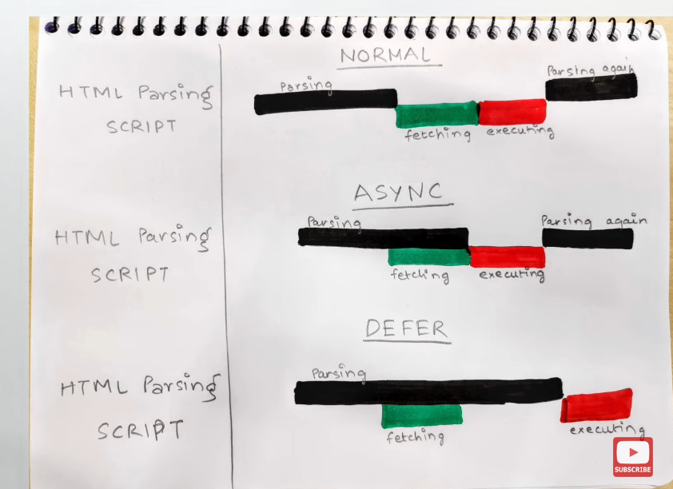

When we load a webpage - 2 major things happen
We going to discuss how they behave in async, defer and normal script tag
html parsing blocks when script is fetching / script is executing
html parsing blocks when script is executing only !! script is fetching asynchronously /
html parsing never blocks , it cotinues to load !! script is fetching asynchronously and execution of scripts is done after HTML rendered
async attribue doesn't gurantee the order of execution of scripts but
differ gurantee the order of execution
e.g let 2nd script tag is dependent on 1st so using async will be the bad decision here, use defer instead
1st script src="" async
2nd script src="" async
e.g let a third party libraby like google analytics. It is quite modular , and independent of our normal code
1st script src="" async
2nd script src="" async